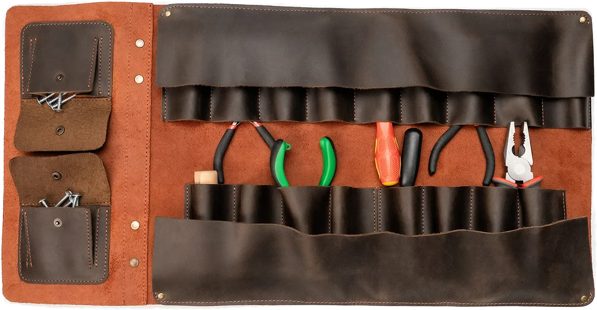

Templates and Outlines

Templates, or as I’d like to call them, “outlines”, is the bare minimum baseline to kickstart writing a function. It’s akin to laying out all your tools neatly before picking which one to use, or like an artist drawing a rough outline/sketch as a baseline. If you’ve tried visual block based languages like Scratch, it lays out all the blocks for you that you can use, and this is what tempaltes accomplish, to gather all the available puzzle pieces(e.g parameters and basic structure) we can use, as the alternative is staring at a blank page stunned. As you program more and more, you’ll be able to template problems in your head.
#Design Recipe Cheatsheet
#|
CHEATSHEET: https://docs.racket-lang.org/htdp-langs/beginner.html
TEMPLATES: https://howtocode.pages.dev/htdp_templates
ASK FOR HELP: https://discord.com/invite/6Zq8sH5
Turn all ❌ into ✅ for each step you complete
== Data ==
1. Data Description❌
1B. if using define-struct, write all accessor signatures❌
2. Interpretation❌
3. Data Examples❌
4. A function template that processes this data❌
== Functions ==
1. Signature, purpose, stub ❌
2. Examples (aka check-expect/tests, elaborate the concrete) ❌
2B. if the function consumes a list, make sure a list of 2 or longer is tested ❌
3. Template(from data)?❌
4. Code body ❌
5. Test, review, and refactor(review all steps, ctrl+i to auto-format) ❌
|##Simple Base Data(concrete)
(define (<FUN-BASE-TEMPLATE> arg1)
(... arg1))
; double: (Number -> Number)
; produces double the given number
(check-expect (double 2) 4)
(check-expect (double 3.5) 10)
; stub (define (double n) 0)
(define (double n)
(... n))#Enum
Enums list all finite possibilities of a given catatgorey of data you want to represent
; A TrafficLight is one of the following Strings:
; - "red"
; - "green"
; - "yellow"
; interpretation the three strings represent the three
; possible states that a traffic light may assume
; TEMPLATE should match amount of cases in the type above, in this case 3 branches:
(define (<FUN-ENUM-TEMPLATE> st)
(cond
[string=? st ...]
[string=? st ...]
[string=? st ...]))
; traffic-light-next: (TrafficLight -> TrafficLight)
; yields the next state given current state st
(check-expect (traffic-light-next "red") "green")
(define (traffic-light-next st)
(cond
[(string=? "red" st) ...]
[(string=? "green" st) ...]
[(string=? "yellow" st) ...]))#Intervals
Use an interval when the information to be represented is numbers within a certain range. Integer[0, 10] is all the integers from 0 to 10 inclusive; Number[0, 10) is all the numbers
; Countdown is Integer[0, 10]
; interp. the number of seconds remaining to liftoff
(define C1 10) ; start
(define C2 5) ; middle
(define C3 0) ; end
; countdown-temp: (Number -> ???)
(define (countdown-temp cd)
(... cd))#Interval cheatsheet
The boolean expression to test whether a number falls within a given interval:
| Interval | Expression | Meaning |
|---|---|---|
| [0, 100] | (and (>= n 0) (<= n 100)) |
Include both 0 and 100 |
| [0, 100) | (and (>= n 0) (< n 100)) |
Include 0 but exclude 100 |
| (0, 100] | (and (> n 0) (<= n 100)) |
Exclude 0 but Include 100 |
| (0, 100) | (and (> n 0) (< n 100)) |
Exclude both 0 and 100 |
#Sets of Intervals
; NumberGrade is a Natural number that falls into one of:
;- (80, 100]
;- (60, 80]
;- (40, 60]
;- (20, 40]
;- [0, 20]
; interp.
;- (80, 100] means A
;- (60, 80] means B
;- (40, 60] means C
;- (20, 40] means D
;- [0, 20] means F
(define ng1 80)
; numgrade-temp: (NumberGrade -> ???)
(define (numgrade-temp num)
(cond
[(and (> num 80) (<= num 100)) ...]
[(and (> num 60) (<= num 80)) ...]
[(and (> num 40) (<= num 60)) ...]
[(and (> num 20) (<= num 40)) ...]
[(and (>= num 0) (<= num 20)) ...]))#Union
Union(aka itemization) describes the case when there are two or more different types of data.
; ValidID is one of:
; #false
; Number
; interp. #false means there is no ID while Number is the ID
; TEMPLATE should match the number of cases above and check with typeof: "<type>?"
(define (<id-fun> x)
(cond [(boolean? x) ...]
[(number? x) ...]))
; pull-over-id-check?: (ValidId -> Boolean)
; returns true if the person has a valid id, otherwise false
(define (pull-over-id-check? x)
(cond [(boolean? x) #false]
[(number? x) #true]))#big-bang World Apps
World apps are interactive applications that can respond to keyboard presses, mouse events, and draw images quickly for things like games, animations, etc.
Note that you can paste in your own images into DrRacket, but for the most part we will be using emoji because when opening the racket file with a text editor(e.g notepad) other than DrRacket, it will display weirdly.
big-bang programs are somewhat hard to autograde so please do not be discouraged by scores and self grade yourself comparing it to my solution
Domain analysis (use a piece of paper or tldraw.com)
- Sketch program scenarios
- Identify constant information
- Identify changing information
- Identify big-bang options
Build the actual program
- Constants (based on 1.2 above)
- Data definitions using HtDD (based on 1.3 above)
Functions using HtDF
- main first (based on 1.3, 1.4 and 2.2 above)
- todo list entries for big-bang handlers
- Work through todo list until done
big-bang options
| If your app needs to: | Then it needs this clause: |
|---|---|
| Update automatically as time passes | on-tick |
| Display something (absolutely required) | to-draw |
| Change in response to a keyboard press | on-key |
| Change in response to mouse events | on-mouse |
| Stop automatically | stop-when |
HTDW Template
(require 2htdp/image)
(require 2htdp/universe)
; My world program does ... (make this more specific)
; =================
; CONSTANTS:
; =================
#| Data definitions:
CHEATSHEET: https://docs.racket-lang.org/htdp-langs/beginner.html
TEMPLATES: https://howtocode.pages.dev/htdp_templates
ASK FOR HELP: https://discord.com/invite/6Zq8sH5
Turn all ❌ into ✅ for each step you complete
1. Data Description❌
1B. if using define-struct, write all accessor signatures❌
2. Interpretation❌
3. Data Examples❌
4. A function template that processes this data❌
|#
; WorldState is ... (give WorldState a better name)
; =================
#| Functions:
1. Signature, purpose, stub ❌
2. Examples (aka check-expect/tests, elaborate the concrete) ❌
2B. if the function consumes a list, make sure a list of 2 or longer is tested❌
3. Template(from data)?❌
3. Code body ❌
4. Test, review, and refactor(review all steps, ctrl+i to auto-format) ❌
|#
; tock: (WorldState -> WorldState)
; produce the next ...
; TODO!
(define (tock ws) ...)
; render: (WorldState -> Image)
; render ...
; TODO!
(define (render ws) ...)
; main: (WorldState -> WorldState)
; start the world with ...
;
(define (main ws)
(big-bang ws ; WorldState
[on-mouse ...] ; WorldState Integer Integer MouseEvent -> WorldState
[on-key ...] ; WorldState KeyEvent -> WorldState
[on-tick tock] ; WorldState -> WorldState
[to-draw render] ; WorldState -> Image
[stop-when ...] ; WorldState -> Boolean
))Mushroom Walk Example
(require 2htdp/image)
(require 2htdp/universe)
; A mushroom that walks off the screen like the Goomba in Mario
; =================
; CONSTANTS:
(define MUSH-IMG (text "🍄" 50 "brown"))
(define WIDTH 500)
(define HEIGHT 400)
(define CENTER-Y (/ HEIGHT 2))
(define BG (empty-scene WIDTH HEIGHT "light blue"))
(define SPEED 4)
; =================
#| Data definitions:
CHEATSHEET: https://docs.racket-lang.org/htdp-langs/beginner.html
TEMPLATES: https://howtocode.pages.dev/htdp_templates
ASK FOR HELP: https://discord.com/invite/6Zq8sH5
Turn all ❌ into ✅ for each step you complete
1. Data Description✅
2. Interpretation✅
3. Data Examples✅
4. A function template that processes this data✅
|#
; Mushroom is a Number
; interp. represents x position of the mushroom in screen coordinates
(define (mush-temp m)
(... m))
; =================
#| Functions:
1. Signature, purpose, stub ✅
2. Examples (aka check-expect, elaborate the concrete) ✅
3. Template(from data)?✅
3. Code body ✅
4. Test, review, and refactor(review all steps, ctrl+i to auto-format) ✅
|#
; main: (Mushroom -> Mushroom)
; start the world with 0
(define (main m)
(big-bang m ; Mushroom
[on-key handle-key] ; Mushroom KeyEvent -> Mushroom
[on-mouse handle-mouse] ; Mushroom Number Number MouseEvent -> Mushroom
[on-tick advance-mush] ; Mushroom -> Mushroom
[to-draw render])) ; Mushroom -> Image
; handle-key: (Mushroom KeyEvent -> Mushroom)
; upon pressing space or "a" key, reset the mushroom position to 0
(check-expect (handle-key 123 " ") 0) ; reset when space is hit
(check-expect (handle-key 456 "a") 0) ; reset when a is hit
(define (handle-key m ke)
(cond [(key=? ke " ") 0]
[(key=? ke "a") 0]
[else
m]))
; handle-mouse: (Mushroom Number Number MouseEvent -> Mushroom)
; set the mushroom x pos to that of the mouse x pos
(check-expect (handle-mouse 123 250 375 "button-down") 250)
(check-expect (handle-mouse 123 250 375 "button-up") 123)
(check-expect (handle-key 456 "x") 456) ; don't do anything to mushroom x
(define (handle-mouse m mousex mousey me)
(cond [(mouse=? me "button-down") mousex]
[else
m]))
; advance-mush: (Mushroom -> Mushroom)
; move the mushroom forward by SPEED
(check-expect (advance-mush 0) (+ 0 SPEED))
(check-expect (advance-mush 2) (+ 2 SPEED))
(define (advance-mush m)
(+ m SPEED))
; render: (Mushroom -> Image)
; draws the mushroom moving forward
(check-expect (render WIDTH) (place-image MUSH-IMG WIDTH CENTER-Y BG))
(define (render m)
(place-image MUSH-IMG m CENTER-Y BG))
Key and Mouse Handlers
The on-key and on-mouse handler function templates are handled specially. The on-key function is templated according to its second argument, a KeyEvent, using the large enumeration rule. The on-mouse function is templated according to its MouseEvent argument, also using the large enumeration rule. So, for example, for a key handler function that has a special behaviour when the space key is pressed but does nothing for any other key event the following would be the template:
; handle-key: (WorldState KeyEvent -> WorldState)
; todo: do something when a key is pressed
(define (handle-key ws ke)
(cond [(key=? ke "x") (... ws)]
[else
(... ws)]))Similarly the template for a mouse handler function that has special behavior for mouse clicks but ignores all other mouse events would be:
; handle-mouse: (WorldState Number Number MouseEvent -> WorldState)
; todo: do something when the mouse moves or clicks
(define (handle-mouse ws mousex mousey me)
(cond [(mouse=? me "button-down") (... ws mousex mousey)]
[else
(... ws mousex mousey)]))For more information on the KeyEvent and MouseEvent large enumerations see the DrRacket help desk.
#Compound Data aka Structs
(define-struct person (name age))
; Person is (make-ball String Number)
; interp. a person comrpises of a name and age
(define P1 (make-person "bob" 10))
; (: person-name ((PersonOf String Number) -> String))
; (: person-age ((PersonOf String Number) -> Number))
; (: person? (Any-> Boolean))
; TEMPLATE should list all the field accessors
(define (person-temp p)
(... (person-name p)
(person-age p)))#Recursive Functions
; ListOfString is one of:
; - empty
; - (cons String ListOfString)
; interp. a list of strings
(define ls0 empty)
(define ls1 (cons "a" empty))
(define ls2 (cons "b" (cons "c" empty)))
#;
(define (strings-temp str-ls)
(cond [(empty? str-ls) (...)] ;BASE CASE
[else (... (first str-ls) ;String
(strings-temp (rest str-ls)))])) ;NATURAL RECURSION
; /
; /
; COMBINATION#Data Driven Templates
| Type of Data | cond question (if applicable) | Body or cond answer(if applicable) |
|---|---|---|
Base Generic
|
Appropriate Predicate
|
Expression that operates on the parameter. (... x) |
Base Concrete
|
Appropriate Predicate
|
Expression that operates on the parameter. (... x) |
One of
|
Cond with one clause per subclass of one of.
| |
Compound
|
|
All selectors.
|
| Other Non-Base Type Reference | Predicates come from: define-struct
|
Call to other types template function
|
| Self Reference | From natural recursion with call to this type's template function
(fn-for-ls (rest ls)) | |
| Mutal Reference Note: form and group all templates in mutual reference cycle together | Call to other type's template function:
(fn-for-lod (dir-subdirs d)
(fn-for-dir (first lod)) |